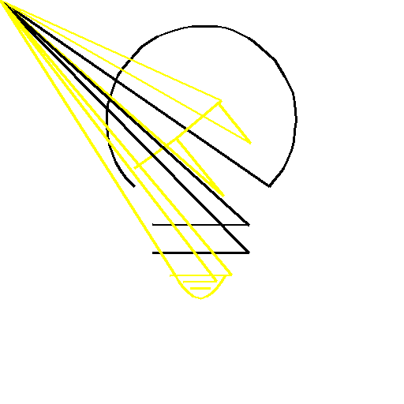

Srisiva V
In this scenario, you step into the shoes of Fleet Admiral Reinhard von Lohengramm, commanding the forces of the Galactic Empire in a pivotal war. A transmission from one of your captains, likely containing critical war information, has reached you—but it’s fragmented across 100 different images!
Your task is to create a script using OpenCV and Pillow to decode and piece together these images. By employing image recognition and manipulation techniques, you'll reveal the hidden message from these scattered fragments!
Objective
The repository contains an assets folder with numerous images, each measuring 512x512 pixels. Each image consists of a white background and a **single** colored dot. The filenames include a number indicating their position in the sequence.
Additionally, there are some images that are completely white, which serve a special purpose that will be explained below.
Instructions
1. Image Sorting: Sort the images based on the numerical order in their filenames.
2. Dot Detection: Utilize OpenCV to detect the position and color of the dot in each image and log the coordinates.
3. Line Drawing: Using Pillow, connect the dots by drawing lines between the dot in one image and the dot in the next. The color of each line should match the color of the dot at the starting point.
4. Handling White Images: Images that are completely white represent line breaks. Do not draw lines connecting a white image to any other image.
1. the images were sorted by the number specified in the filename
2. a python program dot_coord_colors.py was written to identify the coordinates of the dots and the colour of the dots. The program scans the images in the assets directory and detects yellow and black colour dots and their x, y coordinates. The program will write to an output file, say, dot_coordinates_and_colors.txt, the x, y coordinates if a dot is present, else 'no dot' is written and the colour of the dot as black/yellow.
3. A python program join_pts.py was written to read the coordinates and colour data from the file dot_coordinates_and_colors.txt and the coordinates are written to the file coord.txt. A new image with white background of 512 x 512 pixels size is created. Lines joining the coordinates collected from the asset images are drawn with line colour selected as the colour of the starting dot. When a blank image, i.e. an image without dot is encountered in the assets folder, the line is discontinued and started at the next coordinate. Thus, all the dots are joined together on the new white image to form the final image as shown below.
